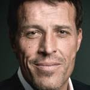
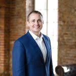

|  |
Tony RobbinsЭнтони Роббинс является признанным авторитетом в психологии лидерства, переговорах, организационных изменениях, и пиковой производительности. Он повлиял на жизни почти 5 миллионов человек из 80 стран мира с помощью своих публичных выступлений, семинаров и видеокурсов, вместе со своей аудиобиблиотекой коучинга и книг-бестселлеров, таких как «Беспредельная власть». |
|  |
Oscar HartmanОскар Хартманн, возраст 35 лет (1982 год рождения), основатель компаний KupiVIP, Aktivo, CarPrice и многих других. Родился в семье русских немцев в Казахстане. В 7 лет переехал с родителями в Германию. Окончил школу управления WHU (Германия) по специальности «Международная экономика», программу МВА в University of Hawaii (США). |
Dmitry PortnyagynРодился 14 апреля 1988 года в Тынде. Подтверждённой информации о наличии у Портнягина законченного высшего образования нет. С 2001 года связан с конторой «ООО Транзит плюс» ИНН 7708092499 КПП 770401001, которая обвиняется в мошенничестве. С 2016 года связан с каналом "«Трансформатор». |